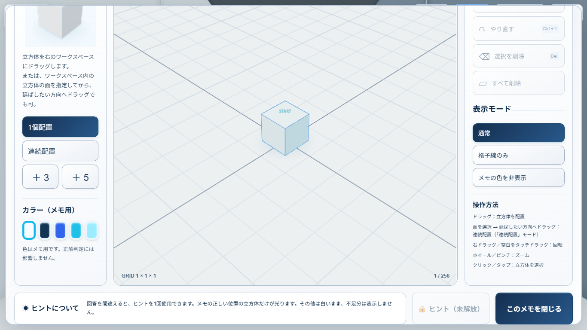
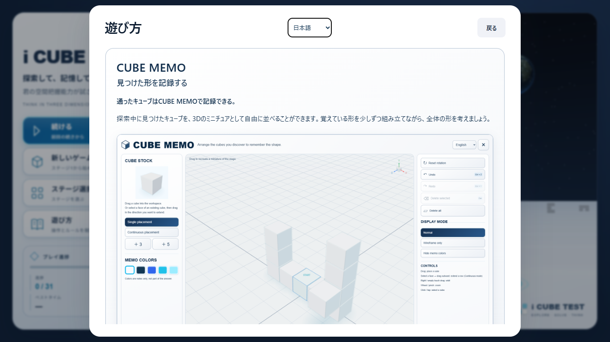
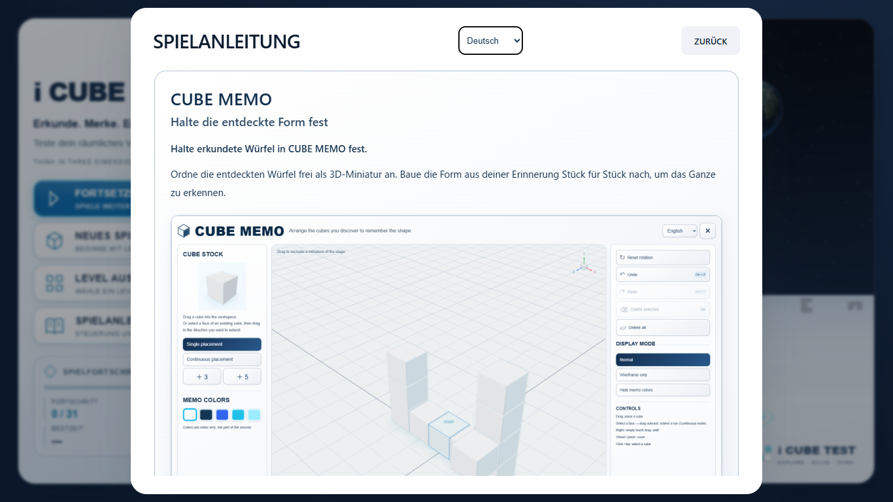

CUBE MEMO UI Polish
+ How To Play Integration
Stage 1-1 Prototype ／ READY FOR USER QA
Footer重なりの原因と修正
修正前の1366×768では、左右パネル下端約838pxに対してFooter開始約665px。Flexで縮んだ領域に対しGridの内容がはみ出していました。
Modalを内容高を確保するGrid行へ変更。左右パネルとFooterを別の行へ分離し、低い画面ではModal全体をスクロールします。配置先の3D Workspaceを小さく潰す方法は使っていません。

1366×768：説明・色パネル・操作欄とFooterが重ならないことを確認。
Navy UI / Cyan Feedback
見出し・アイコン・通常ボタン・主要ボタンを紺主体へ。選択・Ghost・Hint・Hover・FocusのCyanは維持。Gridは淡い青灰色に変更しています。
Stockの2段説明と、面を選択して延ばす方向へドラッグする操作を9言語化。連続配置モードとの関係も明記しました。
 修正後に撮影した英語画面。1896×1256、PNG約687KiB。初期Homeでは読み込まず、How To Playの画像はlazy loading。ミニチュアは説明用の非正解形です。
修正後に撮影した英語画面。1896×1256、PNG約687KiB。初期Homeでは読み込まず、How To Playの画像はlazy loading。ミニチュアは説明用の非正解形です。
How To Play
既存Answer説明の後に、CUBE MEMO・「見つけた形を記録する」・正式本文・ヒント説明を追加。画像内UIは英語固定ですが、本文と画像代替テキストは9言語対応です。Stage 1-1限定の注記も追加しています。
読み取り専用Screenshotのため、How To Play内で編集用RendererやSave処理は起動しません。言語変更はReload不要で、説明欄のスクロール位置も保持します。

日本語：本文はDOM。スクロールして画像とヒントを読めます。
ドイツ語：Runtime切替で同じSectionが更新されます。QA
| 確認 | 結果 |
|---|
| 1920×1080／1366×768／1024×768／844×390／390×844 ×9言語 | 45ケース：重なり・横はみ出しゼロ |
| How To Play × English／日本語／Deutsch／한국어／简体中文 | 25ケース：画像、本文、スクロール、Back PASS |
| 既存Memo操作 | 配置、Y積み、連続配置、＋3/＋5、Undo/Redo、Color、Orbit、Close、Hint PASS |
| 自動テスト | 164 PASS／Build PASS |
レイアウト・How To Play検証 ／ 実操作回帰記録 ／ タッチ検証記録
CubeMemoStore、Game、PlayerController、CameraControllerは変更前後のSHA-256一致。MemoViewportの変更はGridの色のみです。配置・Hint判定・履歴・物理・Save・SDK・Robloxは変更していません。
ブラウザはEdge／Playwright。モバイルはエミュレーションで、物理端末・YouTubeホスト上は未確認です。既存の500kB超bundle警告は残っています。